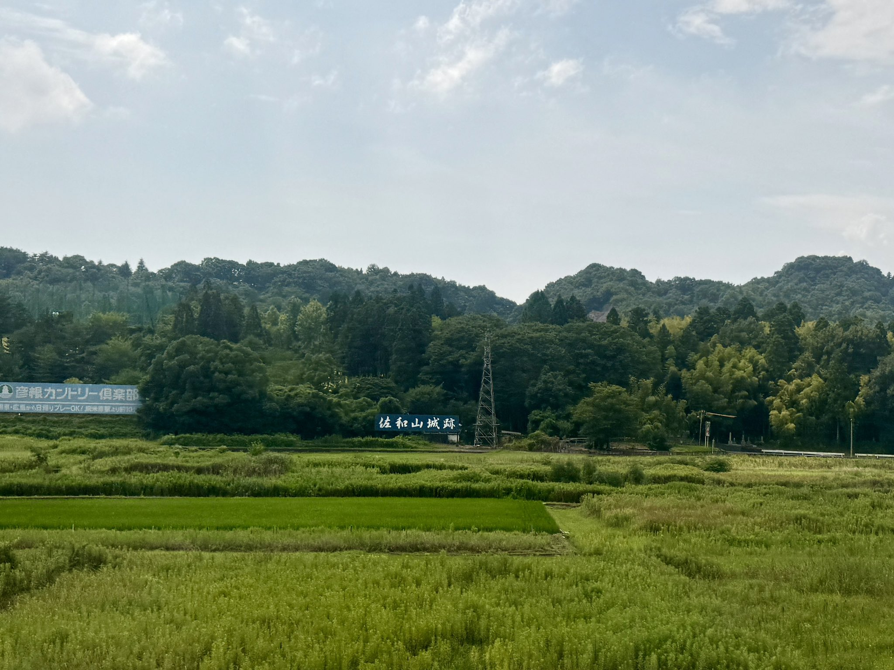

- 지역
- 마이바라 → 교토
- 좌석 쪽
- E석 · 신오사카 방향 오른쪽, 도쿄 방향 왼쪽
- 보이는 시간
- Nozomi로 도쿄 출발 약 115분 후
- 볼 수 있는 시간
- 몇 초Nozomi 기준의 대략적인 시간이며, 열차 속도·날씨·가리는 건물 등에 따라 달라집니다.
이야기
사와야마성은 어떤 성이었으며, 왜 성터만 남았을까요?
사와야마성은 현재 시가현 히코네에 있는 높이 약 232미터의 사와산에 자리했습니다. 나카센도·호쿠리쿠도·이세 가도가 만나는 곳으로, 롯카쿠·아자이·오다 가문이 차례로 다스리던 시기 내내 전략적으로 중요했습니다. 도요토미 히데요시 때에는 정권의 행정을 맡던 오봉행 중 한 명인 이시다 미쓰나리가 명목상 194,000석의 수입을 가진 성주가 되었습니다. 그는 성을 크게 확장해 오중 천수각을 세우고 튼튼한 석축으로 보강했다고 전해집니다. 미쓰나리는 매우 성실하고 원칙을 지키는 통치로 알려졌습니다. 당시 사람들이 사와야마성과 가신 시마 사콘을 ‘그의 지위에 넘치는 두 가지 소유물’이라고 표현한 배경입니다.
도쿄에서 신오사카 방면으로 가신다면 마이바라 → 교토 구간에 가까워질 때 오른쪽 창문(E석)을 살펴보세요. 도쿄 방면으로 가신다면 순서가 반대가 되며 같은 E석이 왼쪽에 있습니다.
눈여겨볼 것
전투와 함락 이후, 오늘날 무엇이 남아 있을까요?
1600년 세키가하라에서 서군이 패하자 사와야마성은 동군의 공격으로 함락되었고, 미쓰나리의 가족들도 공격 중 목숨을 잃었습니다. 도쿠가와 이에야스의 사천왕 중 한 명인 이이 나오마사는 미쓰나리의 옛 영지를 받아 성을 차지했으나, 1603년 그의 후계자 이이 나오쓰구(나오카쓰)가 가까운 히코네산에 새 성을 짓기로 결정했습니다. 1606년 무렵에는 사와야마성이 철저히 해체되어 석재와 목재 상당량이 히코네성 건설에 사용되었습니다. 일부 기록은 미쓰나리의 거점 흔적을 남기지 않으려는 의도가 있었다고 봅니다. 오늘날에는 정상의 평탄한 땅, 조금 남은 석축, 료탄지 같은 사찰이 과거 이곳의 모습을 짐작하게 합니다.
히코네시 관광 사이트는 이 언덕을 ‘이시다 미쓰나리의 성으로 유명하며, 세키가하라 전투 이후 해체된 곳’이라고 소개합니다. 산기슭의 료탄지는 오랫동안 이이 가문과 인연이 있는 사찰이지만 경내에는 미쓰나리의 동상도 있어, 이 역사를 차분히 돌아볼 수 있습니다.
물론 열차에서는 정상의 유적을 볼 수 없습니다. 대신 E석 쪽에 홀로 서 있는 짙은 녹색 언덕과 그 아래 들판의 커다란 ‘사와야마성 터’ 표지판을 찾아보세요. 표지판을 발견하고 그 언덕에서 일어난 일을 떠올리는 것이 이 짧은 풍경의 의미입니다.
지도에서 보기
위치 한눈에 보기
지도 열기장소와 신칸센 관람 지점을 전환해 보세요.
나만의 차창 가이드
차창 풍경을 놓치지 마세요
더 읽어보기
참고 자료
공식 안내와 차창 풍경 기록.